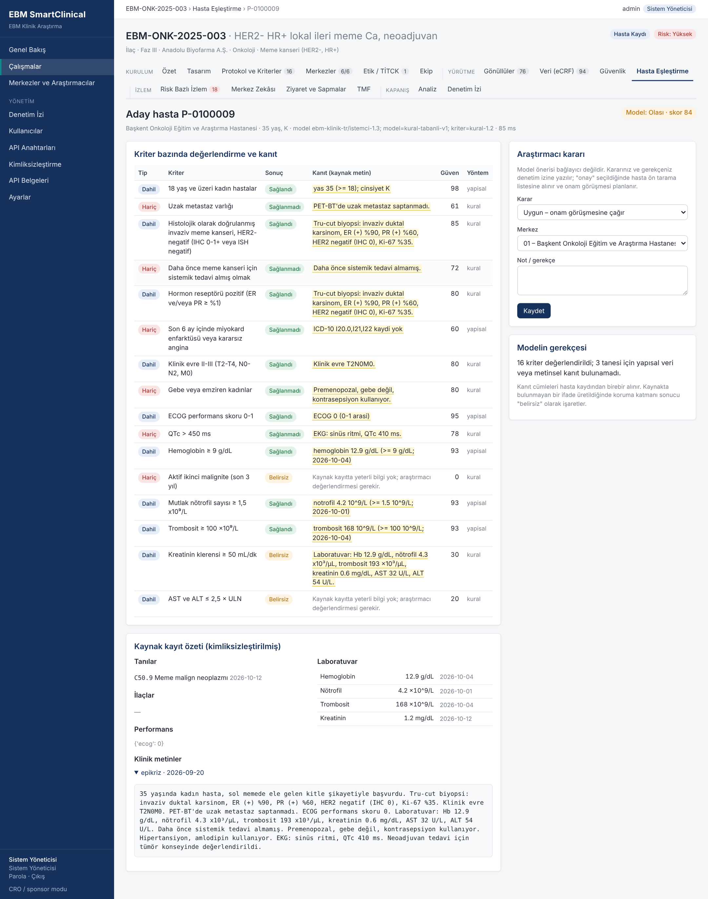

Hastane kayıtlarındaki Türkçe raporları okur, araştırmaya uygun hastaları listeler ve her öneri için "neden uygun?" sorusunun cevabını raporun kendi cümlesiyle gösterir.
Geçmiş verilere bakarak hangi hastanenin kaç hasta kazandıracağını ve ne kadar sürede başlayabileceğini tahmin eder; gerekçesini yazar.
Her hastaneyi sürekli izler: geciken bildirimler, eksik veriler, kurallara uymayan işlemler bir uyarıyla ve açıklamasıyla ekibin önüne düşer.

Araştırmanın tasarımından arşivine her adım aynı yerde: dört adımlı kurulum sihirbazı, kod yazmadan form tasarımı, etik kurul ve TİTCK başvuruları, yan etki bildirimleri, belge arşivi, ön analiz ve sponsorun salt okunur özeti. İlaç, cihaz, tanı kiti ve akademik araştırmalar için; CRO, tek araştırmacı ve üniversiteye göre ayrı kullanım modları.
18 aylık Ar-Ge programı: Türkçe klinik yapay zekâ modelinin eğitimi, üç hastanede gölge mod doğrulaması ve ilk ticari kurulumlar. Yatırımcılar ve pilot iş birliği için iletişime geçin.